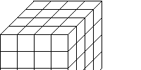
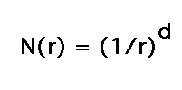
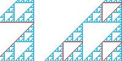

| The physical construction of these block examples is straightforward,
though some care must be taken because of the orientation of the snaps. Here
we focus on the computation of dimension and measure. |
| The dimension of an object has many interpretations
besides the familiar Euclidean notion. |
| The box-counting dimension formula will be motivated by considering the
relationship between the scale at which a self-similar shape is viewed and the number
of scaled copies of the shape contained within the shape. This leads to the
similarity dimension formula. |
| Measuring an object in wrong dimension gives results expected after a moment's thought.
Measuring in the right dimension is more subtle. |
| We begin with dimensions of familiar
Euclidean objects, viewed in a way different from the
intuitive number of independent directions. |
 |
| From this we deduce a scaling relationship that
holds in circumstances more general than lines, squares, and cubes. |
 |
| To illustrate the relation between dimension and measurement, we
compute the perimeter and area of the Sierpinski gasket. |
 |
|